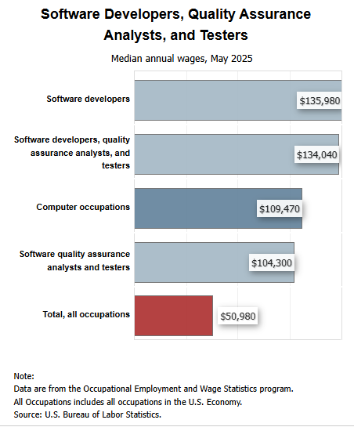

Pay
The average amount to make as a software developer is aroun $130,000 a year with the high end going above $200,000 a year.
When compared to Software analyst developers which are similar, we see that software developers lead the charge in amount per year by about 40K.

"Overall employment of software developers, quality assurance analysts, and testers is projected to grow 15 percent from 2024 to 2034, much faster than the average for all occupations."
"About 129,200 openings for software developers, quality assurance analysts, and testers are projected each year, on average, over the decade. Many of those openings are expected to result from the need to replace workers who transfer to different occupations or exit the labor force, such as to retire."